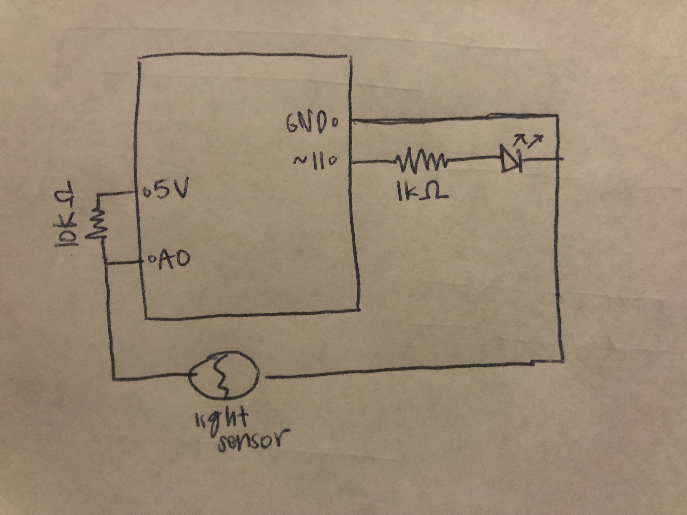
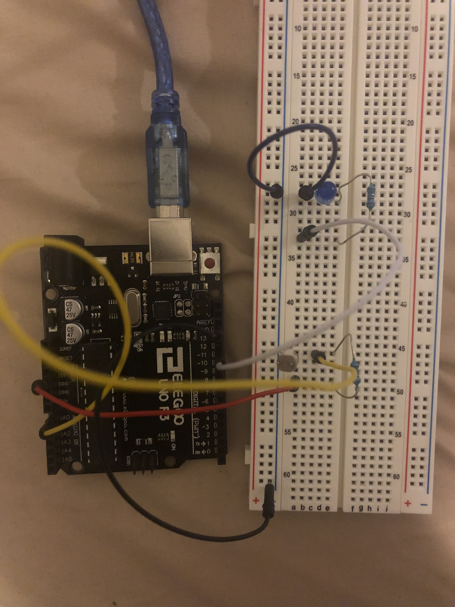

Assignment 4: High(er) Voltage and Transistors!
Sahana Vishwanath
This page shows all the documentation for assignment 4.
The following picture shows the schematic for this assignment:

This schematic uses one photoresistor, one blue LED light, and two resistors. To determine which resistors to use for the LED lights, I used Ohm's law. The blue LED light has a 3.3 V drop, and the LEDs run at 20 mA, or 0.02 A. Since the power source was 5 V, I first subtracted 3.3 from 5, to get 1.7 V. I then used Ohm's law (V = I x R), and substituted the appropriate values to get the formula 2.7 V = 0.02 A x R. Then solving for R, I divided 1.7/0.02 to get 85 ohms. Although the closest resistor that was above 85 ohms, was the a 100 ohm resistor, I chose to use a 1k ohm resistor to be safe. For the photoresistor, I used a 10k ohm resistor to prevent short circuiting.
The following picture shows the circuit for this assignment:

The following code shows the firmware for this assignment:
// analog input pin that the photoresistor is attached to
const int analogInPin = A0;
// output pin that the LED strip light is connected to
const int ledPin = 9;
// value read from the photoresistor
int sensorValue = 0;
// value output to the PWM (analog out)
int outputValue = 0;
void setup() {
// initialize serial communications at 9600 bps
Serial.begin(9600);
// set analogInPin A0 as an input
pinMode(analogInPin, INPUT);
// set ledPin 9 as an output
pinMode(ledPin, OUTPUT);
}
void loop() {
// read the analog in value
sensorValue = analogRead(analogInPin);
// map it to the range of the analog out
outputValue = map(sensorValue, 100, 600, 0, 255);
// turn the LED strip light off if the sensorValue is lower than 800
if (sensorValue < 800) {
// turns LED strip light off
analogWrite(ledPin, 0);
}
// turns LED strip light on if the sensor greater than 800
else {
// set LED light strip brightness to level of outputValue
analogWrite(ledPin, outputValue);
}
// wait 2 milliseconds before the next loop
delay(2);
}
The comments in the above code describe each line of in the above code in detail. The code initializes various variables as well as sets certain output and input pins. The code then runs through a if else statements to turn the LED strip light on or off.
The following gif shows the operation of the circuit for this assignment:

The gif above shows how the circuit operates. When the light is turned off, the LED strip light is on and when the light turns on, the LED strip light turns off.